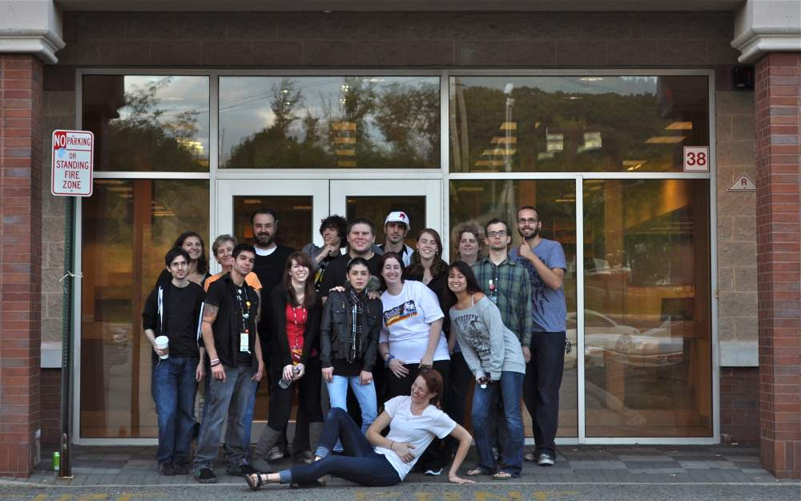

Over 11,000 people learned the answer to this question when Borders Books and Music was bought out by liquidation companies in July of 2011 and closed all of their doors in September of the same year. "Sold Everywhere But Borders" details the liquidation of one Borders store located in Ramsey, New Jersey.
The story of liquidation is told through the creative efforts of over ten employees and compiled by the unlikely narrator, Becca, who had only been working there for a little over a month before they heard the news. As the staff of Ramsey Borders (as the employees call it) trudge through the liquidation process with confidence and humor they learn that there is one thing that keeps them coming into work everyday: each other.
A story of perseverance and family, "Sold Everywhere But Borders" will touch the hearts of ex-employees and ex-customers who loved and miss Borders.